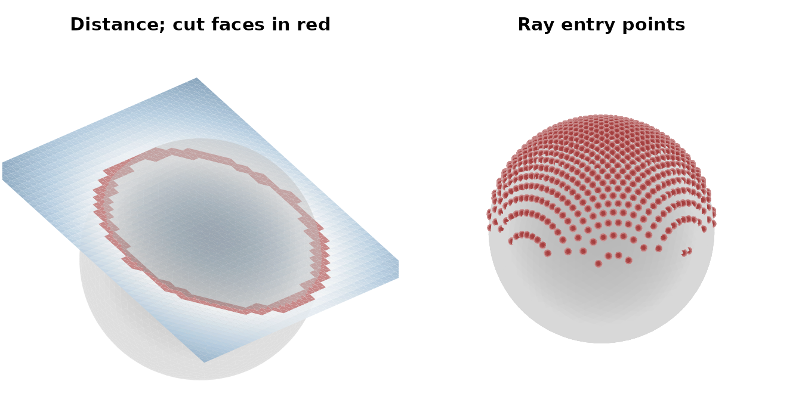
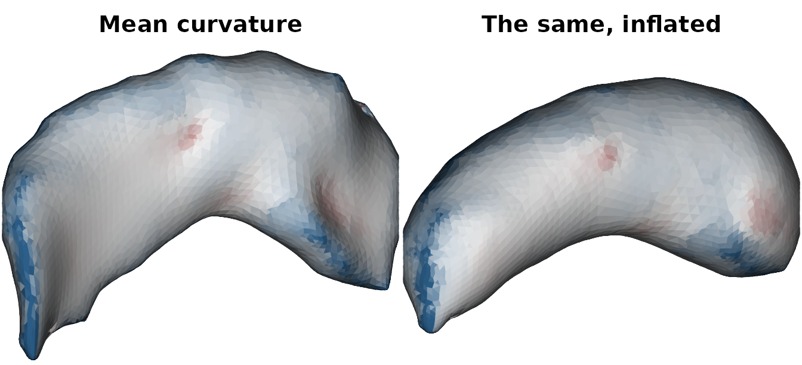
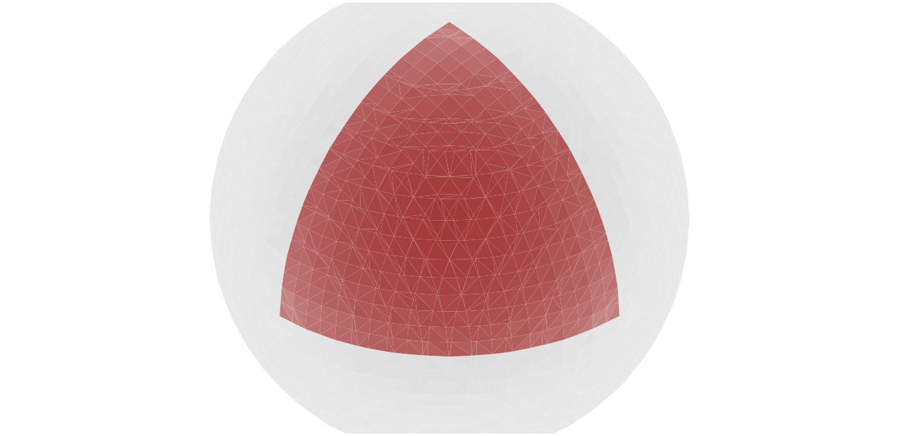
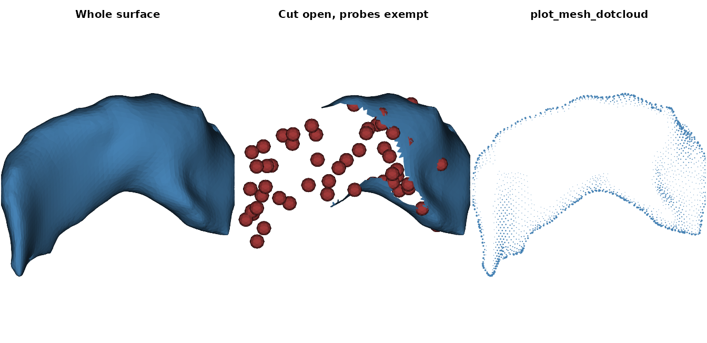

The vcg_* and mris_* families are
ravetools’ low-level geometry layer. They are the building
blocks that the surface pipelines are assembled from, and they are
usable directly. This article walks the whole family, grouped the way
the README table groups it: construct, measure, repair,
smooth, query, subset, and draw.
Every mesh these functions return carries the
ravetools_mesh3d class, which is an rgl-style
mesh3d – a 3 x n vertex matrix vb
and a 3 x m one-based triangle matrix it – so
plot() renders it in base R graphics with no
rgl dependency. ensure_mesh3d coerces the
other common surface formats (fs.surface from
freesurferformats, ieegio_surface from
ieegio, surf.asc) into the same layout, so a
FreeSurfer surface drops into any function below.
1. Two primitives
The cheapest way to get a mesh is to make one.
vcg_sphere returns a subdivided icosphere of
unit radius centered at the origin, and plane_geometry
returns a flat triangulated grid in the z = 0 plane.
sphere <- vcg_sphere(sub_division = 4)
sphere
#> mesh3d object with 2562 vertices, 5120 triangles.
plane <- plane_geometry(width = 2.6, height = 2.6, shape = c(40, 40))
plane
#> mesh3d object with 1600 vertices, 3042 triangles.shape counts vertices per side, so a
40 x 40 grid is 39 x 39 cells and twice that
many triangles. Tilt the plane and lift it, and it slices through the
sphere:
tilt <- new_matrix4()$make_rotation_y(25 * pi / 180)$to_array()
plane$vb <- (tilt %*% rbind(plane$vb[1:3, ], 1))[1:3, ] + c(0, 0, 0.35)new_matrix4 is one of the in-place geometry classes
(new_vector3, new_matrix4,
new_quaternion); to_array hands back the plain
4x4 matrix.
Faces alone do not carry orientation. vcg_update_normals
computes per-vertex normals, which the smoothing, projection, and
ray-casting routines all read:
plane <- vcg_update_normals(plane, weight = "area")
dim(plane$normals)
#> [1] 4 16002. Asking questions about geometry
Three functions answer “where is this thing relative to that thing”, and they trade accuracy against cost differently.
Exact collision
vcg_detect_collision reports, for every element of
y, whether it comes within radius of
x, together with the exact minimum distance. Either side
can be a point cloud, a chain of connected line segments, or a
triangular mesh, so one call covers all nine pairings. Both sides here
are meshes, so answers come back one per triangle of y:
cut <- vcg_detect_collision(sphere, plane, radius = 0.02)
cut$summary$y$unit_type
#> [1] "face"
sum(cut$hit_unit)
#> [1] 307
head(cut$representation)
#> unit index distance x_index
#> 1 354 2 0.019227119 141
#> 2 355 2 0.019227119 141
#> 3 356 2 0.017633209 144
#> 4 357 2 0.018250201 131
#> 5 358 1 0.018250201 131
#> 6 424 2 0.005326802 349representation has one row per hit: unit is
the plane triangle, index is the vertex of that triangle
nearest the sphere, distance is the true minimum distance,
and x_index is the sphere face that was hit. Keeping those
triangles gives the intersection band as a mesh in its own right:
band <- plane
band$it <- plane$it[, which(cut$hit_unit), drop = FALSE]
band
#> mesh3d object with 1600 vertices, 307 triangles.The radius argument makes this a proximity test rather
than a contact test. Raising it thickens the band, because more
triangles fall inside the tolerance:
vapply(c(0.02, 0.1, 0.3), function(r) {
sum(vcg_detect_collision(sphere, plane, radius = r)$hit_unit)
}, 0L)
#> [1] 307 760 1850Line segments are the case worth knowing about, because that is how
diffusion streamlines and electrode shafts arrive. Several chains share
one matrix and are delimited by rows of NA:
streamlines <- rbind(
cbind(seq(-3, 3, by = 0.5), 0, 0),
c(NA, NA, NA),
cbind(seq(-3, 3, by = 0.5), 5, 0)
)
res <- vcg_detect_collision(sphere, streamlines,
mode_y = "segments", radius = 0.1)
res$hit_unit
#> [1] TRUE FALSE
res$representation
#> unit index distance x_index
#> 1 1 4 0 1894The first chain runs through the sphere and the second passes well
clear of it. test_level controls how hard the scan works:
"element" (the default) measures every segment and reports
the closest, "unit" stops at the first hit inside each
chain, and "whole" stops at the first hit anywhere and
answers only the yes-or-no question:
vcg_detect_collision(sphere, streamlines, mode_y = "segments",
radius = 0.1, test_level = "whole")$collide
#> [1] TRUEFinally, include_interior decides whether geometry
buried inside a closed x counts as a collision even when it
never approaches the surface. The center of the sphere is one unit away
from every point of it:
center <- rbind(c(0, 0, 0))
vcg_detect_collision(sphere, center, radius = 0.1)$collide
#> [1] FALSE
vcg_detect_collision(sphere, center, radius = 0.1,
include_interior = TRUE)$collide
#> [1] TRUEThat test uses ray casting, so it needs x to be
watertight with coherently oriented faces – see
vcg_fix_defects below for repairing one that is not.
Nearest neighbors
vcg_kdtree_nearest builds a K-D tree over
target and, for each point of query, returns
the k closest target points and their distances. Unlike
vcg_detect_collision it measures to the nearest
vertex, not to the surface, so it is an approximation – a
cheaper one that is usually good enough, and the right tool when the
identity of the nearest vertex is what is wanted:
kd <- vcg_kdtree_nearest(target = sphere, query = plane, k = 1)
str(kd)
#> List of 2
#> $ index : int [1:1600, 1] 1843 1843 1843 1845 1845 1847 1847 1887 1887 1887 ...
#> $ distance: num [1:1600, 1] 0.972 0.923 0.877 0.832 0.786 ...
range(kd$distance)
#> [1] 0.007727357 0.972278178Asking for more than one neighbor widens both matrices to
k columns, which is how you get a local neighborhood to
average over:
kd3 <- vcg_kdtree_nearest(target = sphere, query = plane, k = 3)
head(kd3$index)
#> [,1] [,2] [,3]
#> [1,] 1843 1835 1833
#> [2,] 1843 1833 1835
#> [3,] 1843 1844 1845
#> [4,] 1845 1844 1843
#> [5,] 1845 1844 1847
#> [6,] 1847 1845 1844Both arguments accept either a mesh or a plain n x 3
matrix, and 2D points work as well as 3D.
Ray casting
vcg_raycaster shoots a ray from each origin along each
direction and reports the first face it meets. Lift the plane clear of
the sphere and drop a ray straight down from every vertex:
above <- plane$vb
above[3, ] <- above[3, ] + 1.8
rays <- vcg_raycaster(sphere, ray_origin = above, ray_direction = c(0, 0, -1))
str(rays[c("has_intersection", "distance", "face_index")])
#> List of 3
#> $ has_intersection: logi [1:1600] FALSE FALSE FALSE FALSE FALSE FALSE ...
#> $ distance : num [1:1600] NA NA NA NA NA NA NA NA NA NA ...
#> $ face_index : int [1:1600] NA NA NA NA NA NA NA NA NA NA ...
sum(rays$has_intersection)
#> [1] 780Rays whose origin lies over the sphere’s silhouette hit it; the rest
report has_intersection = FALSE, NA for
distance and face_index, and an
intersection column that should be ignored.
both_sides = TRUE also searches backwards along the ray,
and max_distance caps how far it travels.
The hits form a point cloud, which is a mesh with vertices and no faces:
pierce <- structure(
list(vb = rays$intersection[, rays$has_intersection, drop = FALSE]),
class = "mesh3d"
)Putting the three answers side by side:
col <- color_ramp_continuous(kd$distance[, 1],
cmap = c("#f2f2f2", "#7fa8c9", "#2c5f8a"))
graphics::par(mfrow = c(1, 2), mar = c(0.1, 0.1, 2.1, 0.1), cex.main = 0.95)
plot_mesh_polygon(
list(sphere, plane, band),
col = list("gray55", col, "#a33a3a"), alpha = c(0.5, 0.92, 1),
eye = c(3.5, -4, 2.2), up = c(0, 0, 1), zoom = 1.15,
shadow_color = "white", ambient_intensity = 0.55,
main = "Distance; cut faces in red"
)
plot_mesh_polygon(
list(sphere, pierce),
col = list("gray72", "#a33a3a"), cex = 0.03,
eye = c(3.5, -4, 2.2), up = c(0, 0, 1), zoom = 0.68,
shadow_color = "white", ambient_intensity = 0.55,
main = "Ray entry points"
)
3. Building a mesh from a volume
Real surfaces come from volumes. vcg_isosurface runs
marching cubes over a 3D array and returns the triangulation, mapping
voxel indices into RAS through
vox_to_ras:
data("left_hippocampus_mask", package = "ravetools")
dim(left_hippocampus_mask)
#> [1] 51 48 38
raw_mesh <- vcg_isosurface(left_hippocampus_mask)
raw_mesh
#> mesh3d object with 4318 vertices, 8652 triangles.mesh_from_volume wraps the same step together with
re-sampling and smoothing, which is convenient when the goal is a
display surface rather than an exact level set:
smoothed <- mesh_from_volume(
left_hippocampus_mask, output_format = "rgl", threshold = 0.5,
remesh = TRUE, remesh_voxel_size = 1, smooth = TRUE, verbose = FALSE
)
smoothed
#> mesh3d object with 4148 vertices, 8292 triangles.mris_make_surfaces is the fourth constructor. It deforms
an existing surface along the intensity gradient of a volume to produce
paired white and pial surfaces, the way a cortical
reconstruction does.
4. Measuring and diagnosing
Before doing anything to a mesh it is worth asking what shape it is
in. vcg_count_edge_defects counts the two things that break
most algorithms:
vcg_count_edge_defects(raw_mesh)
#> $boundary_edges
#> [1] 40
#>
#> $nonmanifold_edges
#> [1] 0
#>
#> $is_closed_manifold
#> [1] FALSEForty boundary edges means the marching-cubes output has holes, so it
is not closed. vcg_mesh_volume says so itself rather than
quietly returning a number that means nothing:
vcg_mesh_volume(raw_mesh)
#> Warning in vcgVolume(meshintegrity(mesh)): Mesh is not watertight! USE RESULT
#> WITH CARE!
#> [1] 5517.25
vcg_average_edge_length(raw_mesh)
#> [1] 0.9971679
vcg_max_edge_length(raw_mesh)
#> [1] 1.414214The two edge-length measures are the ones to check before any operation with a length parameter, since they say what scale the mesh is sampled at.
mris_curvature returns the four standard curvature
fields per vertex – mean, Gaussian, and the two principal
curvatures:
curv <- mris_curvature(raw_mesh)
str(curv)
#> List of 4
#> $ mean : num [1:4318] -0.468 -0.69 -0.509 -0.284 -0.334 ...
#> $ gaussian: num [1:4318] 0.138 0.43 0.1937 0.061 0.0479 ...
#> $ k1 : num [1:4318] -0.183 -0.475 -0.2536 -0.1433 -0.0816 ...
#> $ k2 : num [1:4318] -0.754 -0.905 -0.764 -0.426 -0.587 ...5. Repairing and re-meshing
vcg_fix_defects merges duplicate vertices, fills holes,
and reorients faces, and it reports what it did in an info
attribute:
mesh <- vcg_fix_defects(raw_mesh, verbose = FALSE)
info <- attr(mesh, "info")
info[c("boundary_edges_before", "boundary_edges_after",
"holes_filled", "is_closed_manifold")]
#> $boundary_edges_before
#> [1] 40
#>
#> $boundary_edges_after
#> [1] 0
#>
#> $holes_filled
#> [1] 10
#>
#> $is_closed_manifold
#> [1] TRUE
# the same call that warned above, now on a closed surface
vcg_mesh_volume(mesh)
#> [1] 5517.25The mesh is a closed manifold now, so its volume is
trustworthy and include_interior collision tests will work
on it. Center it for the plots that follow:
mesh$vb[1:3, ] <- mesh$vb[1:3, ] - rowMeans(mesh$vb[1:3, ])Four routines change the sampling. They differ in what they preserve:
uniform <- vcg_uniform_remesh(mesh, voxel_size = 1, verbose = FALSE)
split <- vcg_subdivision(mesh, method = "edge")
capped <- vcg_subdivide_max_edge_length(mesh, max_edge_len = 0.8)
isotropic <- mris_remesh(mesh, target_edge_length = 1.5, verbose = FALSE)
data.frame(
method = c("input", "vcg_uniform_remesh", "vcg_subdivision",
"vcg_subdivide_max_edge_length", "mris_remesh"),
vertices = c(ncol(mesh$vb), ncol(uniform$vb), ncol(split$vb),
ncol(capped$vb), ncol(isotropic$vb)),
avg_edge = round(vapply(list(mesh, uniform, split, capped, isotropic),
vcg_average_edge_length, 0), 3),
max_edge = round(vapply(list(mesh, uniform, split, capped, isotropic),
vcg_max_edge_length, 0), 3)
)
#> method vertices avg_edge max_edge
#> 1 input 4318 0.997 1.414
#> 2 vcg_uniform_remesh 4161 0.988 1.717
#> 3 vcg_subdivision 17326 0.498 0.707
#> 4 vcg_subdivide_max_edge_length 12784 0.566 0.791
#> 5 mris_remesh 1121 1.663 3.127vcg_uniform_remesh re-samples through a distance field
on a voxel grid, so it also repairs topology at the cost of
exact geometry. vcg_subdivision splits every edge, doubling
resolution everywhere. vcg_subdivide_max_edge_length splits
only edges above a threshold, leaving well-sampled regions alone.
mris_remesh implements the isotropic re-meshing of
Botsch and Kobbelt (2003), driving every edge
toward one target length, and is the one to reach for when downstream
code cares about triangle quality.
6. Smoothing and deforming
Two smoothers come from vcglib and one from the
cortical-surface literature:
taubin <- vcg_smooth_explicit(mesh, type = "taubin", iteration = 10)
implicit <- vcg_smooth_implicit(mesh, lambda = 0.2, degree = 2)
fs_style <- mris_smooth(mesh, niterations = 20L)
vapply(list(mesh, taubin, implicit, fs_style), vcg_mesh_volume, 0)
#> [1] 5517.250 5526.756 5419.094 4496.284vcg_smooth_explicit applies a per-vertex
Laplacian step repeatedly; type = "taubin"
alternates a positive and a negative step so the surface does not
shrink. vcg_smooth_implicit solves for the smoothed
positions in one sparse solve, which is stable at much larger
lambda. Both preserve the vertex count; only the positions
move.
mris_inflate goes further, flattening the folds while
preserving total surface area. It also returns the sulc
depth field – how far each vertex traveled – which is what makes an
inflated surface readable:
inflated <- mris_inflate(fs_style, n_averages = 4L, niterations = 8L,
scale_brain = FALSE, verbose = FALSE)
names(inflated)
#> [1] "mesh" "sulc"
range(inflated$sulc)
#> [1] -4.911788 4.436476mris_sphere continues the deformation all the way onto a
sphere of target_radius, which is the mapping that
surface-based registration is built on. How close it gets is worth
checking, because the residual spread in vertex radius is the honest
measure of convergence:
spherical <- mris_sphere(fs_style, target_radius = 100, verbose = FALSE)
radius <- sqrt(colSums(spherical$vb[1:3, ]^2))
c(min = min(radius), max = max(radius), cv = stats::sd(radius) / mean(radius))
#> min max cv
#> 90.34295945 112.17180004 0.01515924Under two percent here. Both mris_inflate and
mris_sphere were designed for cortical surfaces, where the
input is large, smooth, and genuinely sphere-like; a small closed
structure such as this hippocampus maps only approximately, and raising
niterations past the default makes it worse rather than
better on such an input.
Mapped side by side with mean curvature, the first two stages show what inflation preserves:
curv <- mris_curvature(fs_style)
lim <- stats::quantile(abs(curv$mean), 0.95)
curv_col <- color_ramp_continuous(
curv$mean, clim = c(-lim, lim),
cmap = c("#2c5f8a", "#f2f2f2", "#a33a3a")
)
graphics::par(mfrow = c(1, 2), mar = c(0.1, 0.1, 2.1, 0.1))
plot_mesh_polygon(fs_style, col = curv_col, eye = c(0, 100, 30),
up = c(0, 0, 1), zoom = 1.1, main = "Mean curvature")
plot_mesh_polygon(inflated$mesh, col = curv_col, eye = c(0, 100, 30),
up = c(0, 0, 1), zoom = 1.1, main = "The same, inflated")
7. Subsetting and extracting
vcg_subset_vertex keeps the vertices a logical selector
marks and the faces whose corners all survive:
selector <- mesh$vb[1, ] > 0
half <- vcg_subset_vertex(mesh, selector)
c(input = ncol(mesh$vb), kept = ncol(half$vb))
#> input kept
#> 4318 2194vcg_mesh_patch cuts a mesh along a closed loop of
waypoints. They are snapped to the nearest vertices, the
loop between them is walked, and the result is a two-element list: the
enclosed patch and everything else.
target <- vcg_uniform_remesh(vcg_sphere(), verbose = FALSE)
patches <- vcg_mesh_patch(target, waypoints = diag(1, 3))
vapply(patches, function(p) ncol(p$it), 0L)
#> [1] 931 6517
graphics::par(mar = c(0.1, 0.1, 0.1, 0.1))
plot_mesh_polygon(patches, col = list("#a33a3a", "gray70"),
alpha = c(1, 0.55), eye = c(10, 10, 10), zoom = 1.2,
shadow_color = "white", ambient_intensity = 0.55)
dijkstras_surface_distance walks the mesh graph from a
start vertex and returns the geodesic distance to every
other vertex; surface_path then reads the shortest path to
any target back out of that result. Note that it takes the transposed
matrices – one row per vertex and one row per face:
dist <- dijkstras_surface_distance(
positions = t(mesh$vb[1:3, ]),
faces = t(mesh$it),
start_node = 1,
face_index_start = 1
)
path <- surface_path(dist, target_node = ncol(mesh$vb))
c(vertices_on_path = length(path$path), length = max(path$distance))
#> vertices_on_path length
#> 61.00000 61.72654Because the walk follows edges, the answer depends on the sampling –
which is the practical reason to run mris_remesh before
measuring distances across a surface.
8. Drawing
plot_mesh_polygon projects every triangle with an
orthographic camera, shades it by how directly it faces that camera,
depth-sorts everything, and draws it in a single polygon
call. plot_mesh_dotcloud draws vertices as rim-lit dots
instead. plot() dispatches to whichever suits the mesh.
Both take a list of meshes and render them into one shared depth
space, so several surfaces compose correctly. For one mesh,
col is a single color, a character vector of one color per
vertex, or any other vector, which is read as a depth gradient; for a
list of meshes, pass a list of those, one element per mesh.
alpha is one value per mesh. A mesh with no face matrix is
drawn as one small vcg_sphere per vertex, scaled by
cex – which is how the ray hits in section 2 were
rendered.
Two controls are worth knowing. mesh_clipping discards
triangles whose normal points along the camera ray, peeling the front
cap off a closed surface; pair it with side = "both" so the
exposed back wall is drawn rather than culled in turn.
clipping_plane culls faces against arbitrary world-space
planes instead – each a length-5 vector of a normal, a signed offset,
and which half-space to keep – and clipping_plane_enabled
exempts individual meshes from it, which is how electrodes stay whole
while the surface around them is cut away.
Scattering some probes inside the surface – found with the same interior test from section 2 – shows why the exemption matters: cut the surface open and the probes stay whole.
bbox <- apply(fs_style$vb[1:3, ], 1L, range)
set.seed(1)
candidates <- cbind(
stats::runif(600, bbox[1, 1], bbox[2, 1]),
stats::runif(600, bbox[1, 2], bbox[2, 2]),
stats::runif(600, bbox[1, 3], bbox[2, 3])
)
inside <- vcg_detect_collision(fs_style, candidates,
include_interior = TRUE)$hit_unit %in% TRUE
probes <- structure(
list(vb = t(candidates[inside, , drop = FALSE])),
class = "mesh3d"
)
sum(inside)
#> [1] 74
eye <- c(0, 100, 30)
graphics::par(mfrow = c(1, 3), mar = c(0.1, 0.1, 2.1, 0.1), cex.main = 0.95)
plot_mesh_polygon(fs_style, col = "steelblue", eye = eye, up = c(0, 0, 1),
zoom = 1.1, main = "Whole surface")
plot_mesh_polygon(
list(fs_style, probes),
col = list("steelblue", "#a33a3a"), cex = 1.1,
eye = eye, up = c(0, 0, 1), zoom = 1.1,
clipping_plane = c(0, 1, 0, 0, -1),
clipping_plane_enabled = c(TRUE, FALSE),
main = "Cut open, probes exempt"
)
# `plot_mesh_dotcloud` has no `main`; add the title afterwards
plot_mesh_dotcloud(fs_style, col = "steelblue", eye = eye, up = c(0, 0, 1),
zoom = 1.1, cex = 0.45)
graphics::title(main = "plot_mesh_dotcloud")
If rgl is installed, rgl_view and
rgl_call drive an interactive window using the same meshes,
and rgl_plot_normals draws the normal field:
References
Botsch, M, and Kobbelt, L (2003). A
remeshing approach to multiresolution
modeling. Proceedings of the 2004
Eurographics/ACM SIGGRAPH
Symposium on Geometry Processing, 185-192.
Fischl, B, Sereno, MI, and Dale, AM (1999).
Cortical surface-based analysis II: inflation, flattening, and a
surface-based coordinate system. NeuroImage, 9(2),
195-207.
The vcg_* functions are built on vcglib
from the Visual Computing Lab, ISTI.